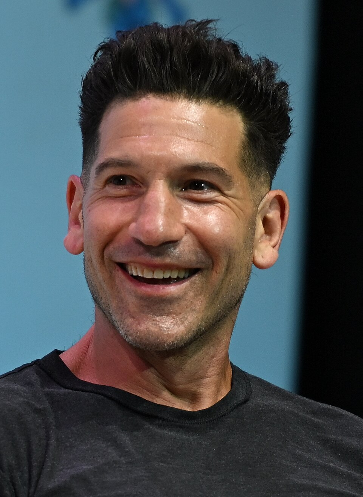

Spider-Man
Réalisé par Sam Raimi
2002
EXCLUSIVELY IN MOVIE THEATRES
JULY 31, 2026

Jon Bernthal
Frank Castle/le Punisher
Quatre ans se sont écoulés depuis que le sort du Dr Strange a fait oublier au monde que Peter Parker est Spider-Man. Dans son costume, il continue à protéger New York, aimé du public, jusqu’à ce qu’une série de crimes inhabituels l’entraîne dans une toile de mystère plus vaste qu’il n’en a jamais affrontée. Pour faire face à ce qui l’attend, Spider-Man devra non seulement être au sommet de sa forme physique et mentale, mais aussi prêt à affronter les conséquences de son passé.